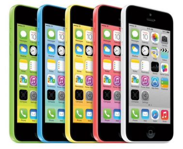

The iPhone 5c, simply put, is for those who've grown numb to Apple's largely evolutionary takes on its primary iPhone range. It'll attract a younger audience that cares less about finely beveled edges and more about playing Connect 4 on their iPhone case. It'll cater to the same crowd that has looked longingly towards the $599 (again, off-contract) Moto X -- a phone for the mainstream, and a phone that's as colorful as one's soul. In a way, this is the anti-Moto X. From a price, spec and feature perspective, it's a match that's too close to call. The iPhone 5c's camera has an edge on the MOTO X, but the X's Active Display is a boon for notifications.
As these things tend to go, a lot of it boils down to ecosystem preference. The iPhone 5c is being built for the same audience as the flashy iPod nano, and moreover, Apple built it for those on Wall Street who feel that it simply must attract new markets to stay atop its game.
Apple never showed intentions of racing the Nexus 7 to the bottom in the tablet game, and the iPhone 5c is proof that it won't do that in the phone arena, either.
Infographic by Troy Dunham for Engadget
Kebudayaan Indonesia yang multikultur seperti itu, ketika dikaji dari sisi dimensi waktu, dapat dibagi pula pengertiannya :
Adapun pengaruh positif dapat berupa :
| NO | NAMA LENGKAP | TUNJANGAN | GAJIH | TOTAL | |||
|---|---|---|---|---|---|---|---|
| DEPAN | BELAKANG | ANAK | ISTRI | TRANSPORT | |||
| TOTAL | |||||||